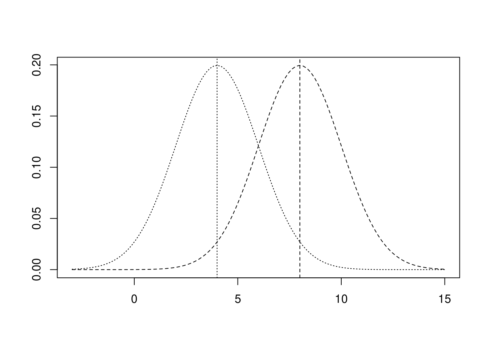
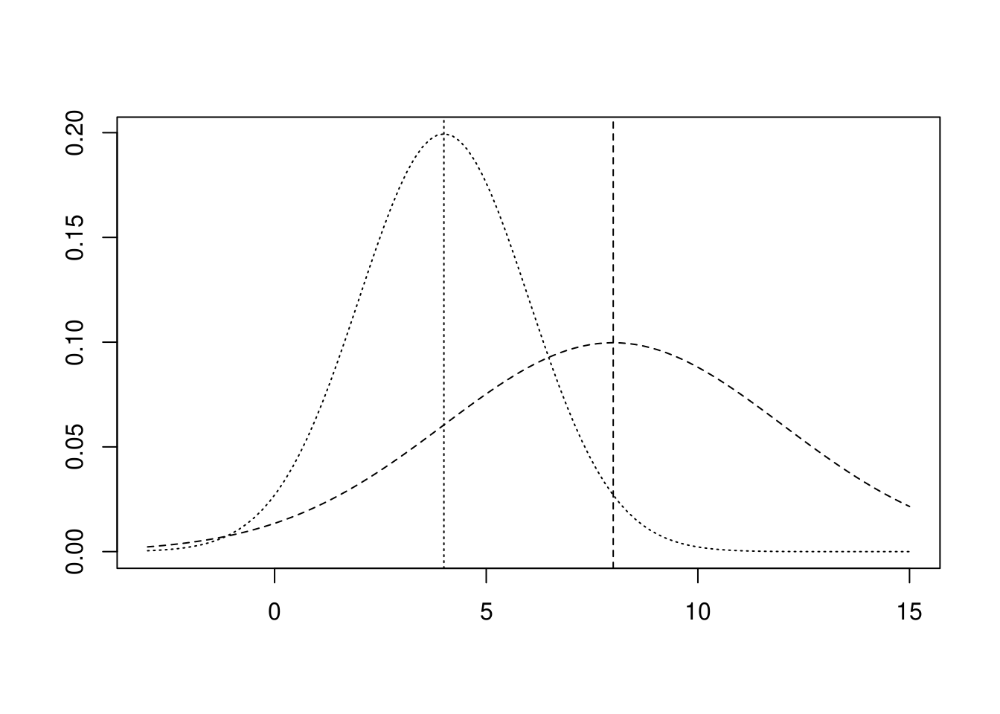

4.1 標準偏差は波の「激しさ」
標準偏差は平均値からどの程度データがばらついているかを表しています。テキストではこのばらつきを「波打ちの激しさ」と表現しています。
4.2 標準偏差がわかるとデータの特殊性を評価できる
標準偏差がわかるということは、以下がわかるということになります。
- 一つのデータ（セット）の中にある任意の値の持つ意味
- 複数のデータ（セット）の違い
4.3 複数のデータセットの比較
（省略）
4.4 加工されたデータの平均値と標準偏差
以下のデータに一定の加工を加えた際に平均値や標準偏差がどのように変化するかを見てみましょう。
対象データ
x <- read.csv(file = "./data/P49_図表4-5.csv")
x %>%
df_print()
データに一定数を加えた場合
それぞれに\(4\)を加える。
元データ全てに\(4\)を加える
x %>%
dplyr::mutate(Y = X + 4) %>%
df_print()それぞれの平均値を求める
求めた平均値を用いてそれぞれの偏差を求める
求めた偏差を用いてそれぞれの分散を求める
求めた分散を用いてそれぞれの標準偏差を求める
sqrt(var) %>%
df_print()
以上のようにデータに一定数を加えると平均値は加えた一定値の分だけ大きくなりますが、他の統計量は変化していないことが分かります。元データが正規分布のデータであると仮定して可視化すると下図のようになります。
元データ（点線：左）と加算データ（破線：右）

データに一定数を乗じた場合
それぞれに\(2\)を乗ずる。
元データ全てに\(2\)を乗ずる
x %>%
dplyr::mutate(Y = X * 2) %>%
df_print()それぞれの平均値を求める
求めた平均値を用いてそれぞれの偏差を求める
求めた偏差を用いてそれぞれの分散を求める
求めた分散を用いてそれぞれの標準偏差を求める
sqrt(var) %>%
df_print()
以上のようにデータに一定数を乗じると平均値は乗じた一定値の分だけ大きくなり、他の統計量も乗じた一定値の分だけ大きくなっていることが分かります。元データが正規分布のデータであると仮定して可視化すると下図のようになります。
元データ（点線：左）と加算データ（破線：右）

整理すると下表になります。
| 加工方法 | 平均値 | 標準偏差 | 備考 |
|---|---|---|---|
| 無加工（元データ\(x\)） | \(\bar{x}\) | \(SD\) | |
| 定数の加算(\(x + k\)) | \(\bar{x} + k\) | \(SD\) | 変化するのは平均値のみ |
| 定数の乗算(\(x \times k\)) | \(\bar{x} \times k\) | \(SD \times k\) | 平均値・標準偏差ともに変化 |
\(k\): 任意の実数
標準偏差何個分となるようにデータを加工する効果
ここで説明されているのは「正規化」です。
対象データ（P49のデータX）
x <- read.csv(file = "./data/P49_図表4-5.csv")
x %>%
df_print()
上記のP49のデータは、平均値\(4\)、標準偏差\(2\)ですので、\((データ - 平均値) \div 標準偏差\)を計算（正規化）すると下記のようになります。
正規化する
nXの平均値と標準偏差は以下のように\(0\)と\(1\)になることが分かります。
正規化したデータの平均と標準偏差を求める
練習問題
（省略）
【コラム】偏差値で嫌な思いをしたことのあるあなたに
（省略）
追加問題
P16の身長データを正規化（\((\mbox{データ} - \mbox{平均値}) \div \mbox{標準偏差}\)）してみましょう。
解答例
scale()関数を使うと簡単に正規化できます
x <- "./data/P16_図表1-1 .csv" %>%
readr::read_csv(col_names = FALSE, show_col_types = FALSE) %>%
tidyr::pivot_longer(cols = dplyr::starts_with("X"),
names_to = "name", values_to = "value") %>%
dplyr::arrange(name) %>%
dplyr::select(height = value) %>%
dplyr::mutate(normalized = scale(height))
x %>%
df_print()
正規化前後の平均値と標準偏差を比べると下記のようになります。